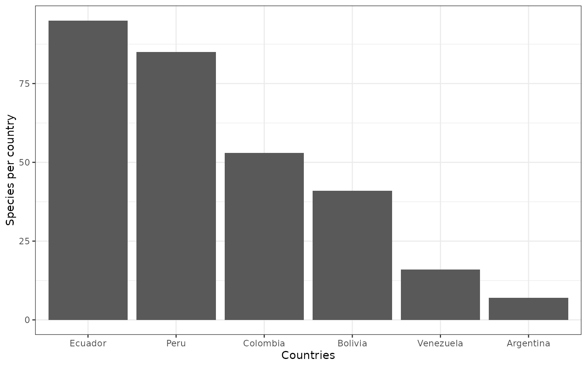

- Summary of results of this regional Red List report:
| Conservation.status | Number.of.species |
|---|---|
| Critically Endangered | 1 |
| Endangered | 42 |
| Vulnerable | 27 |
| Near Threatened | 20 |
| Least Concern | 29 |
| Data Deficient | 8 |
| Not Evaluated | 0 |
| Total | 127 |
- Number of endemic tree species by country in the tropical Andes.
(Calderón et al. 2002; IUCN 2010; León-Yánez et al. 2011; León et al. 2006; Llamozas et al. 2003; Meneses and Beck 2005).
| Country | CR | EN | VU | NT | LC | DD | Subtotal | NE | Total |
|---|---|---|---|---|---|---|---|---|---|
| Ecuador | 2 | 36 | 52 | 9 | 5 | 1 | 105 | 61 | 166 |
| Peru | 9 | 31 | 15 | 2 | 3 | 10 | 70 | 50 | 120 |
| Colombia | 4 | 5 | 5 | 2 | 1 | 0 | 17 | 60 | 77 |
| Bolivia | 0 | 5 | 1 | 0 | 0 | 1 | 7 | 94 | 101 |
| Argentina | 0 | 0 | 0 | 0 | 0 | 0 | 0 | 3 | 3 |
| Venezuela | 0 | 0 | 0 | 0 | 0 | 0 | 0 | 0 | 0 |
| Total endemic | 15 | 77 | 73 | 13 | 9 | 12 | 199 | 268 | 467 |
| Regional assessment | 1 | 42 | 27 | 20 | 29 | 8 | 127 | 0 | 127 |
| Total Andes | 16 | 119 | 100 | 33 | 38 | 20 | 326 | 268 | 594 |
- Number of species per country that were evaluated

The distribution of the 127 species across countries.